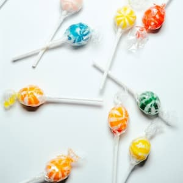
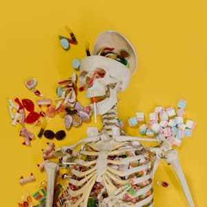

Lollipops have been around for a long time and are a popular type of candy made from sugar, skewered on a stick. They are believed to be a popular confection amongst the nobles during the Middle Ages. It is unclear when the modern lollipop came into existence, but one of the theories is that it was created in 1908 by a man named George Smith in Connecticut. Is is believed that George named his sweet snack after a racehorse of the time named lolly pop. Others believe the word lollipop to have a Northern English origin, where ‘lolly’ means tongue and ‘pop’ means slap. It was used to refer to something sweet but not filling. Additionally, there are other theories that believe the word lollipop to have a Romany origin of toffee apples that were sold on a stick, because a red apple in Romany language is called loli phaba.
Regardless of its origin, since their inception, lollipops have come a long way, and these days we can find them in variety of shapes, sizes, colours, and infused with different flavours. Recently, they are even being researched as an alternative used to deliver medications for patients that have difficulty swallowing. Lollipops are also an already popular alternative for people who use cannabis medically or recreationally to intake its components into their body. Unlike smoking, with cannabis infused lollipops, the active components are absorbed orally across the mucous membrane into the bloodstream instead of through the lungs. This makes cannabis infused lollipops popular among people who have respiratory issues. It also provides a slower rate of delivery and is more discrete.

Active ingredients in cannabis infused lollipops
When we talk about products containing cannabis or marijuana, the two main ingredients of interest are Delta-g-tetrahydrocannabinol (THC) and Cannabidiol (CBD). THC and CBD were initially thought to directly interact with the cell membrane lipids to produce their effects. However, after more research it has been found that THC works by binding to the cannabinoid receptor CB1 in the central nervous system (mainly the brain) and CB2 in the immune system. The activation of CB1 and CB2 receptors is what causes the sensation of euphoria and being high.
CBD on the other hand has negligible affinity to these receptors. This is why only using CBD does not get you high. CBD works in a more indirect way by blocking and enhancing other receptors. This makes some receptors more receptive to serotonin, which leads to an enhancement in a person's mood and relaxation.

Effects on the body
Marijuana products with THC are primarily used for recreational purposes due to the psychological effects it provides, whereas CBD is primarily used for its medicinal benefits. Some common effects of THC and CBD are listed below:
CBD effects:
Decreased anxiety
Increased focus
Decrease pain
Decrease inflammation
THC effects:
Increased heart rate
Dilation of blood vessels
Dry mouth
Hunger
Change in conscious perception
Reduces anxiety in lower doses
Can aggravate anxiety with higher doses
The pros of using cannabis infused lollipops compared to other methods are that lollipops are easy to ingest. They are also more discrete. Since a lollipop can last for a while, it can allow the effect of the cbd or thc to last longer. Additionally, since it is being absorbed into the bloodstream through the mucous, it provides a higher bioavalability of the active ingredients as opposed to ingestion or smoking. However, it could also take longer to kick in compared to smoking. Another pro of cannabis infused lollipops is that it contains lots of sugar which can hide the hempy aftertaste.
Cannabis Laws in North America
In Canada, according to the Cannabis Act passed in October 2018, cannaboid products are legal for medical and recreational use for people aged 18 and older. It also details that an individual may possess no more than 30 grams of marijuana (dried, or its equivalent non-dried form) at any time. Furthermore, individuals are allowed to carry up to 30 grams while traveling within the country. However, it is strictly prohibited to carry this drug outside the country internationally.
In the USA, cannabis products that have less than 0.3% THC are legal according to the US federal laws. However, each state also has their own regulations regarding the substance. In some states it is completely legal to use marijuana for both recreational and medical use, whereas in some states it is only legal for medical use. The amount of cannaboi products and THC allowed per person also varies wildly across states.